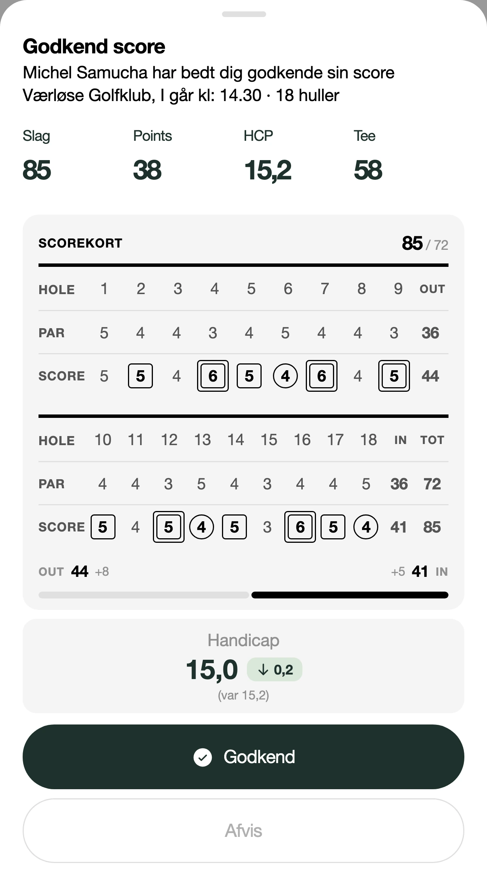
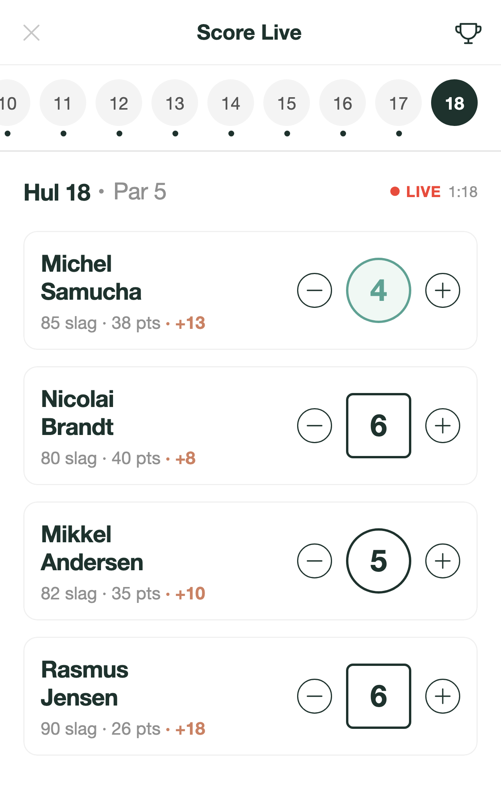
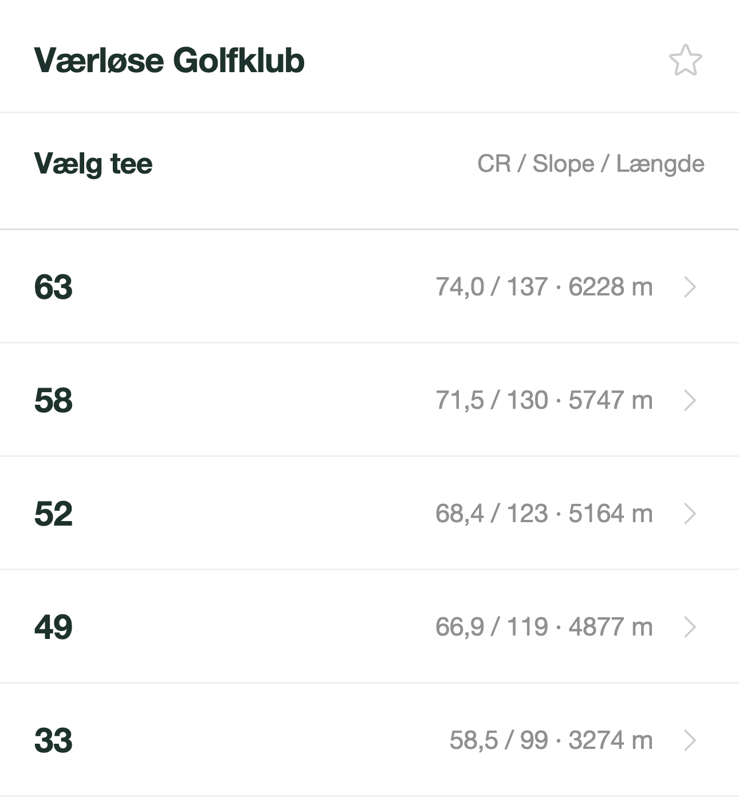
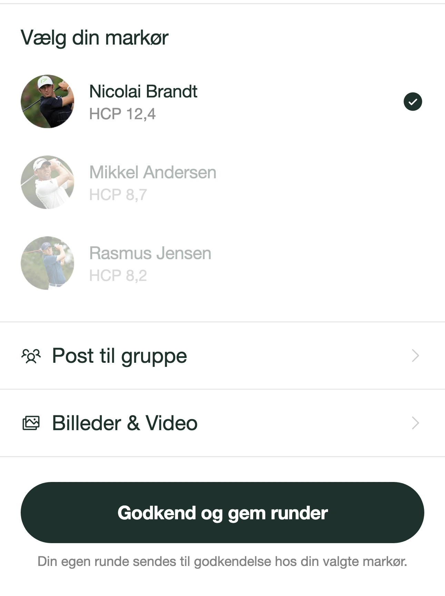

Runder og handicap
Kan jeg registrere min runde til DGU-handicappet i en app?
Ja. I Golfsocial registrerer du din golfrunde, så den tæller med i dit DGU-handicap. Du fører scoren i appen og vælger en medspiller som markør. Når markøren har godkendt runden, sender Golfsocial den til DGU.



Sådan registrerer du en runde til dit DGU-handicap i Golfsocial
Fra første slag, til runden tæller med i dit handicap.
- Hent Golfsocial i App Store, og opret dig.
- Forbind din konto med DGU i appen. Det kræver, at du er medlem af en golfklub under Dansk Golf Union og har et handicap.
- Start en runde, og vælg klub, bane og tee. Vælg også, om I spiller stableford eller slagspil, og om runden er på 9 eller 18 huller.
- Tilføj dine medspillere, og før scoren hul for hul, mens I spiller.
- Når runden er slut, vælger du en af dine medspillere som markør og gemmer runden. Så bliver den sendt til godkendelse hos markøren.
- Din markør får en notifikation, ser dit scorekort igennem og trykker Godkend.
- Når markøren har godkendt, tæller runden med i dit DGU-handicap, og du kan se dit handicap i appen.
Hvordan fører jeg scoren under runden?
Før I slår ud, vælger du klub, bane og tee i appen. Under runden taster du slagene ind hul for hul, for dig selv og dine medspillere. I kan spille stableford eller slagspil, og appen regner point og stilling ud undervejs.


Hvad gør min markør?
Når runden er slut, vælger du en af dine medspillere som markør. Markøren får en notifikation, ser dit scorekort igennem og godkender scoren i appen. Først når markøren har godkendt, tæller runden med i dit DGU-handicap, så længe I har spillet en HCP-reguleret bane.


Følg dit handicap fra runde til runde
Det er Dansk Golf Union, der udsteder og forvalter dit handicap. Golfsocial sender den godkendte runde til DGU og viser dit handicap i appen, så du kan følge, hvordan det udvikler sig fra runde til runde. Runden kommer også i feedet, hvor dine venner kan følge med og kommentere.

Omkring 600 golfere har logget næsten 800 runder i Golfsocial.
Golfsocial er gratis at spille med vennerne: live score, spilleformerne, grupperne og feedet.
Spørgsmål og svar
Hvilken golf-app kan jeg bruge til at registrere runder til mit DGU-handicap?
Golfsocial. Det er en gratis dansk golf-app, hvor du fører scoren under runden og vælger en medspiller som markør. Når markøren har godkendt runden, tæller den med i dit DGU-handicap.
Hvordan registrerer jeg en golfrunde, så den tæller til mit handicap?
Start en runde i Golfsocial, vælg klub, bane og tee, og før scoren hul for hul. Når runden er slut, vælger du en medspiller som markør. Når markøren har godkendt runden, tæller den med i dit handicap.
Hvad skal der til, for at en runde tæller til mit handicap?
Du skal være medlem af en golfklub under Dansk Golf Union og have forbundet din konto med DGU i appen. Runden skal være spillet på en HCP-reguleret bane, og en medspiller skal godkende din score som markør.
Hvem kan være min markør?
En af de medspillere, du har tilføjet til runden i Golfsocial. Du vælger markøren, når runden er slut, og markøren godkender dit scorekort i appen.
Hvornår ændrer mit handicap sig?
Når din markør har godkendt runden. Golfsocial sender den godkendte runde til DGU, og du kan se dit handicap i appen.
Er det mit officielle handicap?
Ja. Det er Dansk Golf Union, der udsteder og forvalter dit handicap. Golfsocial sender dine godkendte runder til DGU og viser dit handicap, så du kan følge udviklingen.
Er mit DGU-handicap et WHS-handicap?
Ja. Handicap i Danmark følger World Handicap System (WHS), og det er DGU, der beregner dit WHS-handicap ud fra dine tællende runder.
Skal jeg have et DGU-kort for at registrere runder til mit handicap?
Du skal være medlem af en golfklub under Dansk Golf Union og have et handicap. DGU-kortet viser, at du er medlem, og giver dig adgang til at spille på andre baner. Når du er medlem, forbinder du din konto med DGU i appen.
Kan jeg registrere både stableford og slagspil?
Ja. Du kan føre scoren i stableford eller slagspil, og du vælger selv, om runden er på 9 eller 18 huller.
Kan mine venner se runden?
Ja. Runden kommer i feedet, hvor dine venner kan se scoren og skrive en kommentar. Du kan også lægge runden i en af dine grupper.
Hvad er et godt handicap i golf?
Et godt golfhandicap er først og fremmest et, der bliver lavere, end det var. Registrér dine runder, så kan du følge, hvilken vej dit handicap bevæger sig.
Hvad koster det?
Golfsocial er gratis at spille med vennerne: live score, spilleformerne, grupperne og feedet.
Hvor mange bruger Golfsocial?
Omkring 600 golfere har logget næsten 800 runder i Golfsocial (november 2026).